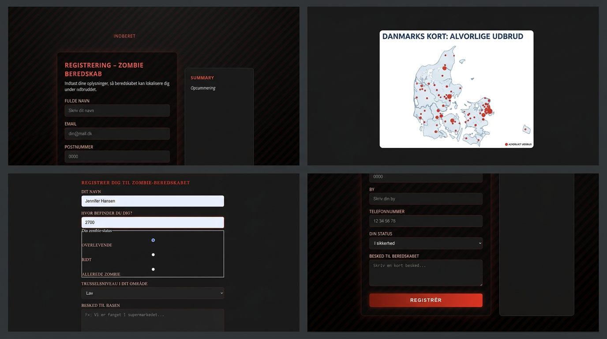

Projekt · Proces · Refleksion
I Tema 4 arbejdede jeg med JavaScript og Adobe‑pakken, hvor jeg udviklede mine egne illustrationer og UI‑elementer. Jeg skabte bl.a. et fiktivt zombie‑udbrudskort over Danmark og begyndte på et registreringssystem med brugerinput.
Her er et screenshot af min løsning:

Jeg lærte at kombinere kode og design via inputs og interaktive elementer. Samtidig brugte jeg Adobe Illustrator til at tegne mine egne grafiske assets, som jeg kunne integrere i projektet.
Selvom jeg ikke nåede at færdiggøre hele sitet, fik jeg vigtig erfaring med både JavaScript‑logik og visuel produktion. Jeg eksperimenterede med to forskellige registreringsflows og lærte at skabe mine egne images fra bunden.